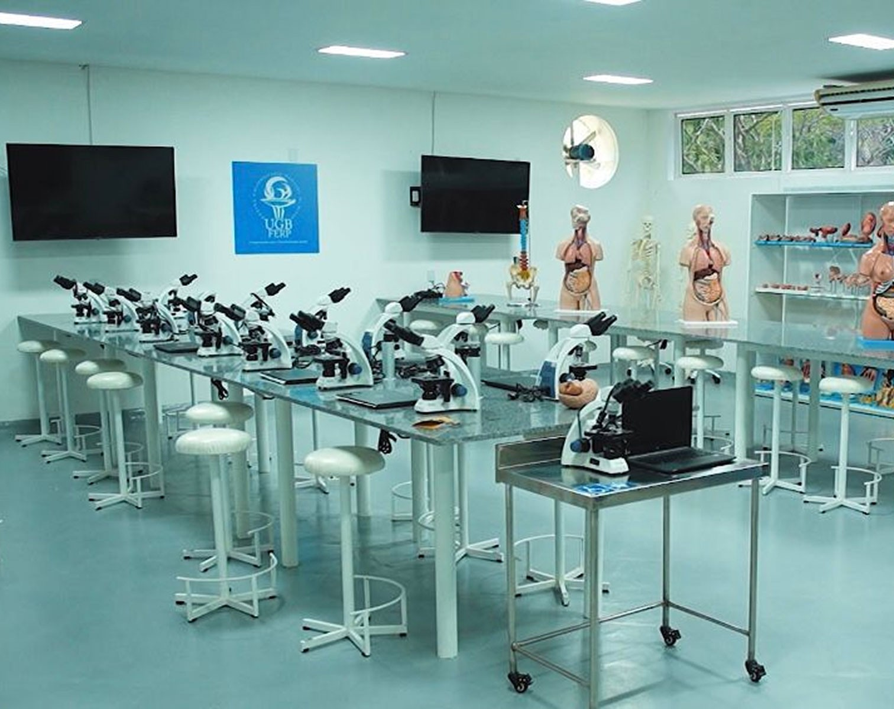
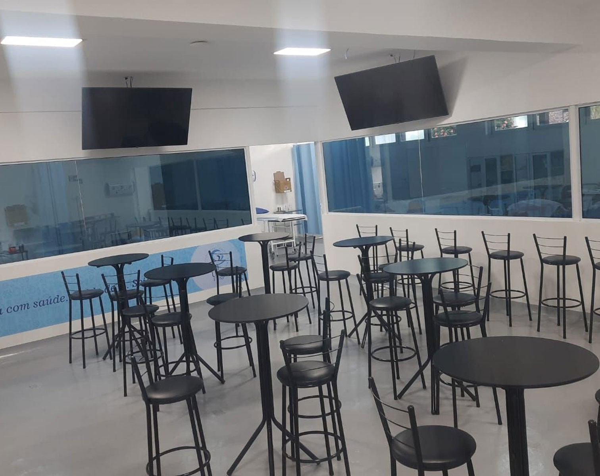
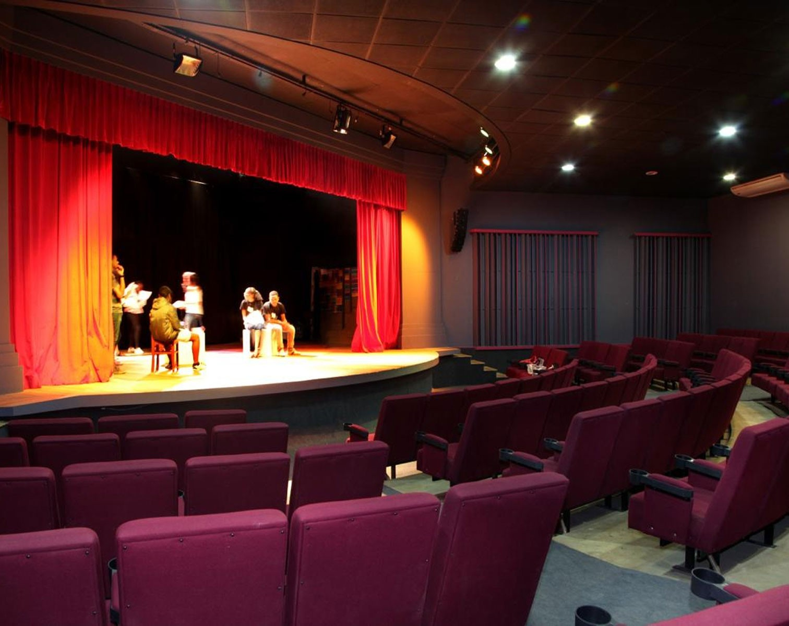
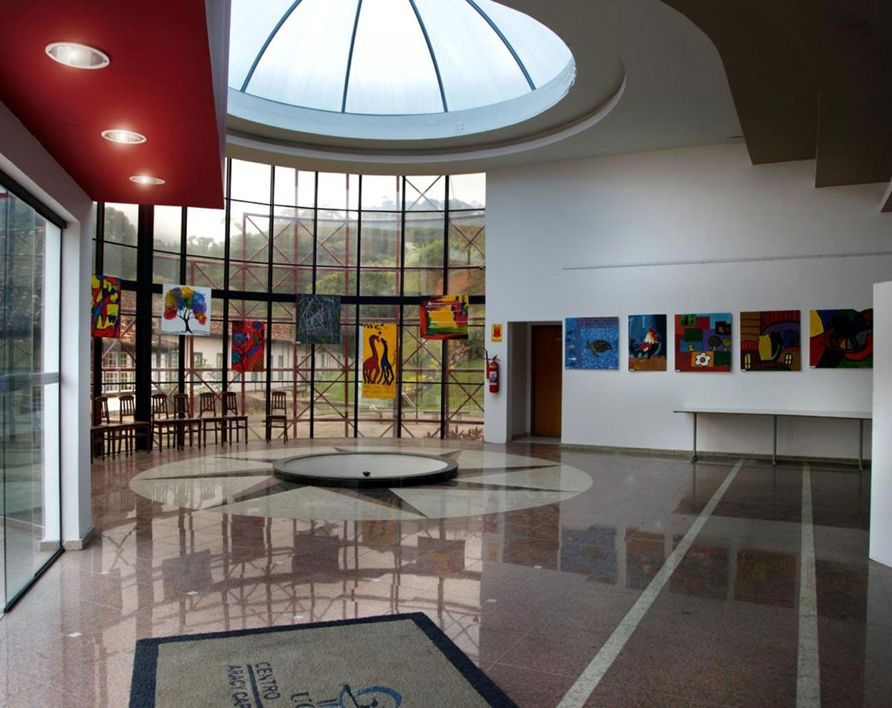
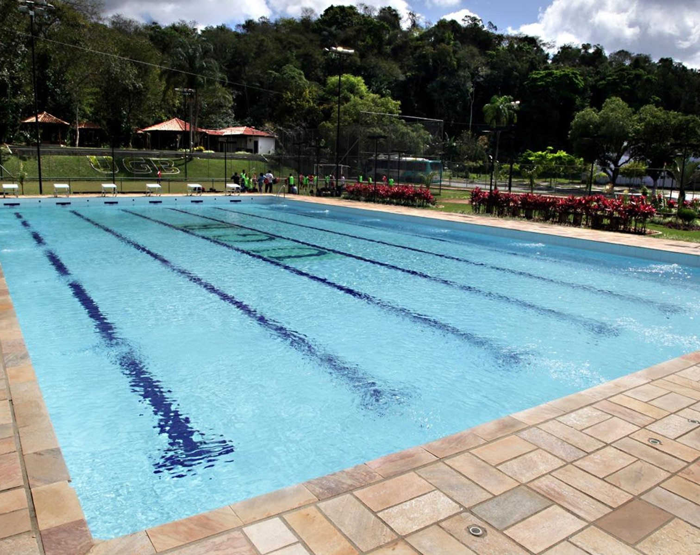
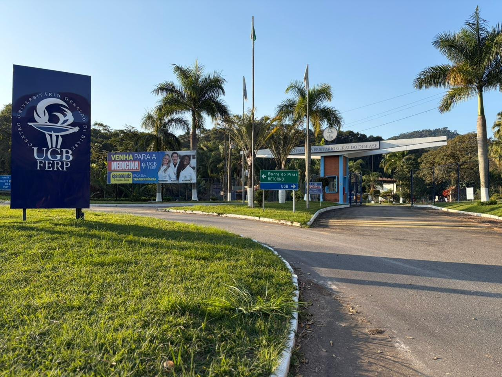

Prática desde o 1º período
Teoria e prática integradas desde o início do curso, com vivências reais que preparam você para o dia a dia da profissão.
Curso de Medicina do UGB/FERP, autorizado pelo MEC, com prática clínica desde os primeiros períodos, laboratórios de habilidades médicas e uma Rede Escola de Saúde em 4 municípios.
Preencha e nossa equipe entra em contato com todas as informações.
Nossa equipe já recebeu seus dados e vai entrar em contato em breve. Quer adiantar? Fale agora mesmo no WhatsApp.
Falar com um consultorO UGB/FERP forma médicos generalistas preparados para a realidade da saúde no Brasil, unindo ciência, técnica e cuidado com as pessoas desde o primeiro dia.
Teoria e prática integradas desde o início do curso, com vivências reais que preparam você para o dia a dia da profissão.
Estágios e práticas em UBS, ambulatórios, hospitais, centro cirúrgico e urgência/emergência, em contato real com o SUS.
Laboratórios de anatomia, microscopia, simulação e habilidades médicas equipados para o treinamento prático.
Professores Doutores e Mestres, atuantes em diferentes áreas da Medicina, que ensinam com experiência clínica real.
Curso coordenado por autoridade nacional em Medicina, com projeto pedagógico alinhado às Diretrizes Curriculares do MEC.
Biblioteca física e virtual, salas de metodologias ativas, auditório, complexo esportivo e ambientes de convivência.

O Centro de Ciências da Saúde, em Barra do Piraí, foi pensado para as demandas da formação médica, do laboratório à beira do leito.




O curso é conduzido por um corpo docente titulado e uma coordenação reconhecida nacional e internacionalmente.
Graduado em Medicina pela UERJ, Mestre em Anatomia (UFRJ) e Doutor em Morfologia (UNIFESP). Pesquisador 1A do CNPq e Cientista do Estado do Rio de Janeiro (FAPERJ), com trajetória de liderança na Medicina brasileira.
Corpo docente formado por Doutores e Mestres, atuantes em diferentes especialidades médicas.
O Campus de Barra do Piraí integra uma Rede Escola de Saúde consolidada com quatro municípios, oferecendo cenários de prática reais em toda a região.
A Rede Escola de Saúde conecta 4 municípios:

O sonho de vestir o jaleco branco se realiza todos os dias no UGB/FERP.
Escolhi o UGB pela prática desde o começo. Ter contato com pacientes cedo mudou minha forma de estudar e me deu muito mais segurança.
Fiz minha transferência e foi a melhor decisão. A estrutura dos laboratórios e o preparo dos professores são de outro nível.
A Rede Escola de Saúde me colocou dentro do SUS de verdade. É onde eu percebi que fiz a escolha certa pela Medicina.
Condições especiais e diferentes formas de ingresso para você começar Medicina.
Ou fale no WhatsApp. *Pagamento antecipado até o último dia útil do mês anterior.
O que está incluso no seu investimento
Realizar o sonho de cursar Medicina pode ficar mais acessível. Conheça as alternativas de financiamento do UGB/FERP.
Financie o valor do semestre de Medicina e pague em um prazo maior, em até 12 parcelas. Sujeito à análise de crédito.
Financie até 100% do valor do semestre, contratado por semestre letivo, sem acumular parcelas futuras. Sujeito à análise de crédito.
Reduza o valor pago por mês durante a graduação. Contratação online, com simulação rápida e análise de crédito.
As perguntas mais comuns de quem quer cursar Medicina no UGB/FERP.
Não encontrou o que procurava? Fale com nossa equipe.
Sim. O curso é autorizado pela Portaria SERES/MEC nº 827, de 06 de novembro de 2025, e segue as Diretrizes Curriculares Nacionais para a formação médica.
O curso funciona no Centro de Ciências da Saúde, no Campus de Barra do Piraí (RJ), em regime integral (manhã e tarde), com sistema seriado semestral.
Você pode ingressar por Vestibular, Transferência (vindo de outra instituição) ou Segunda Graduação. Preencha o formulário e nossa equipe indica o melhor caminho para o seu caso.
São 60 vagas anuais. Por isso, quanto antes você se inscrever, maiores as chances de garantir a sua.
A prática acontece desde os primeiros períodos, com laboratórios de habilidades médicas e vivências na Rede Escola de Saúde: UBS, ambulatórios, hospitais, centro cirúrgico e urgência/emergência.
A mensalidade integral é de R$ 10.000, com R$ 9.500 até o vencimento e R$ 8.500 com pagamento antecipado (até o último dia útil do mês anterior). Fale com a equipe para conhecer todas as condições.
É simples: preencha o formulário nesta página com seus dados. Em seguida, nossa equipe entra em contato com todas as orientações. Você também pode falar direto pelo WhatsApp.
São apenas 60 vagas por ano. Preencha o formulário agora e dê o primeiro passo rumo ao jaleco branco.